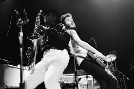

1 / 3

Caption Text
2 / 3

Caption Two
3 / 3
Caption Three
Man has achieved far more mind boggling tasks then creating the television...yes it's used everyday for very necessary things such as information (news) and leisure but millions of years and the countless amount of people who have walked the earth and the ideas that have been thought/brought to life television doesn't ranked among the top 20. What about the creation of the 12 month calander? It's amazing how man with technology nothing like we see today was able to develop a time clock and determine how many days it took days it takes for the earth to rotate the sun is just amazing.
Music is the language of existence in my book. It puts our humanity into perspective, and brings meaning to everyday moments. Without music, it would be very hard to reflect on where we are and what we are doing, because as selfish creatures we are never fully satisfied. Always looking either toward the future, or past. I guess it’s most unique quality is to stop time at a moment and give us the ability to judge life with a perspective